Пространственная статистика
25 апреля 2024 г.
Точечный паттерн (point pattern) представляет собой множество точек в \(\mathbb{R}^2\), обозначаемое малой жирной буквой:
\[\mathbf{x} = \{x_1, x_2,...x_n\}\] - Количество точек \(n = n(\mathbf{x})\) может быть любым неотрицательным числом
Множество является неупорядоченным (индексы чисто условны)
Допускаются дубликаты (совпадающие точки), однако большинство методов рассчитаны на то, что дубликатов в множестве нет.
Если \(\mathbf{x}\) представляет точечный паттерн и \(B\) — это некий регион, то \(\mathbf{x} \cap B\) есть подмножество \(\mathbf{x}\), состоящее из точек, попадающих в \(B\):
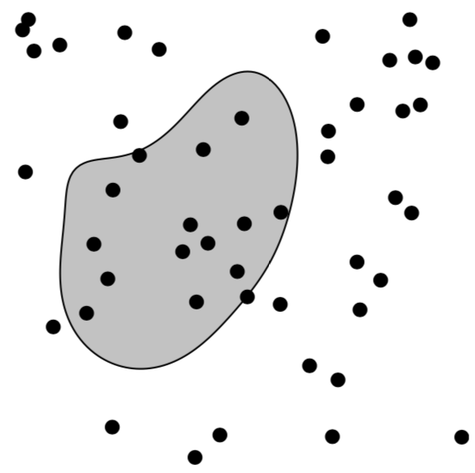:scale 40%
В данном случае количество точек, попадающих в \(B\), равняется \(n = n(\mathbf{x} \cap B)\)
__ Точечным процессом__ называется случайный процесс, реализациями которого являются точечные паттерны
Конечный точечный процесс (finite point process) — это точечный процесс, каждая реализация которого представляет собой точечный паттерн с конечным числом точек. При этом для любой области \(B\) количество точек \(\mathbf{x} \cap B\) представляет собой случайную величину с определимыми параметрами.
Локально конечный точечный процесс имеет конечное число точек в любой ограниченной области \(B\) (более мягкое утверждение). Реализацией такого процесса является локально конечный точечный паттерн.
Простейшим точечным процессом является процесс \(U = (U_1, U_2)\), каждая реализация которого включает одну точку \(u = (u_1, u_2)\).
Случайная точка будет равномерно распределена в пространственной области \(W\), если ее координаты \((U_1, U_2)\) имеют совместную плотность распределения, которая постоянна в пределах \(W\) и равна нулю за ее пределами.
Поскольку интеграл плотности распределения равен 1, величина постоянной будет равна \(1/|W|\):
\[f(u_1, u_2) = \begin{cases} 1/|W|,~\text{если}~(u_1, u_2) \in W\\ 0, ~\text{в противном случае} \end{cases}\]
Если \(B\) представляет собой тестовую область в \(W\), то вероятность того, что точка \(U\) попадет в \(B\), будет равна:
\[\mathbb{P}\{U \in B \} = \int_B f(u_1, u_2) du_1 du_2 = \\ = \frac{1}{|W|} \int_B 1 du_1 du_2 = \frac{|B|}{|W|}\] - эта вероятность равна доле площади \(B\) в \(W\)
Биномиальным называется точечный процесс \(\mathbf{X} = \{X_1,..., X_n\}\), реализации которого содержат \(n\) точек.
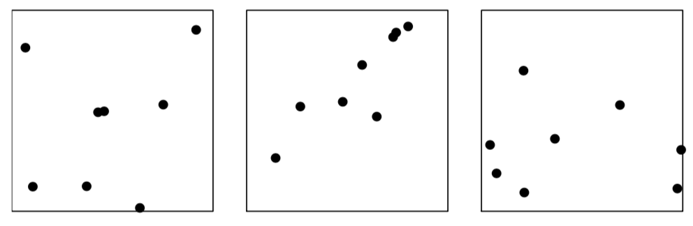Baddeley et. al., 2016
Чтобы точки были распределены равномерно по пространству, необходимо выполнение двух условий:
Если \(B\) представляет собой тестовую область, то количество \(n(\mathbf{X} \cap B)\) случайных точек, попавших в \(B\), будет равняться количеству индексов \(i\) таких, что \(X_i \in B\).
Чтобы определить вероятностное распределение \(n(\mathbf{X} \cap B)\), рассмотрим эту величину как количество успешных исходов в \(n\) независимых испытаниях. Будем считать «успехом» исход, при котором случайная точка \(X_i\) попадает в \(B\).
Если испытания независимы и равномерно распределены, то вероятность успеха равна \(p = |B| / |W|\) и величина \(n(\mathbf{X} \cap B)\) имеет биномиальный закон распределения:
\[\mathbb{P}\{n(\mathbf{X} \cap B) = k\} = \left( \begin{array}{c} n \\ k \end{array} \right) p^k (1-p)^{n-k}\color{grey}{, k = 0, 1, ..., n}\]
Биномиальный коэффициент равен \(\left(\begin{array}{c} n \\ k \end{array} \right) = \frac{n!}{(n-k)!~k!}\)
Однородный пуассоновский точечный процесс (homogeneous Poisson point process), или абсолютная пространственная случайность (complete spatial randomness — CSR) характеризуется следующими свойствами:
Baddeley et. al., 2016
Однородность (гомогенность) означает, что ожидаемое количество точек, попадающих в регион \(B\) должно быть пропорционально его площади:
\[\operatorname E[n(\mathbf{X} \cap B)] = \lambda |B|\] Параметр \(\lambda\) представляет собой среднее количество точек на единицу площади — интенсивность точечного процесса.
В отличие от биномиального процесса, полностью случайный (Пуассоновский) процесс характеризуется случайным количеством точек.
Пространственная независимость означает, что количества точек в двух неперекрывающихся областях \(A\) и \(B\) являются независимыми случайными переменными:
\[n(\mathbf{X} \cap A) \not\sim n(\mathbf{X} \cap B),~A \cap B = \emptyset\] > Для биномиального процесса условие независимости не выполняется, поскольку известно общее количество точек. Если в область \(A\) попало \(k\) точек, то в область \(B\) не может попасть более чем \(n-k\) точек, что нарушает условие независимости распределений.
Предположение о независимости выполняется для любых непересекающихся регионов \(A\) и \(B\) и для любого числа этих регионов
Одним из следствий независимости является тот факт, что количество точек, подсчитанное по регулярной сетке квадратов, также даст совокупность независимых величин (для любого размера сетки):
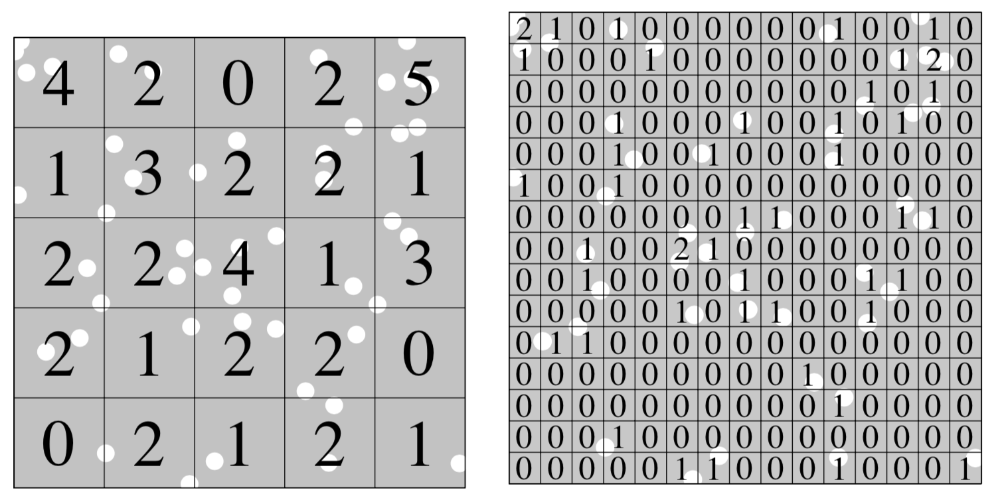Baddeley et. al., 2016
Упорядоченность (orderliness): при стремлении площади области к нулю, вероятность нахождения в этой области более одной точки, деленная на площадь, также стремится к нулю
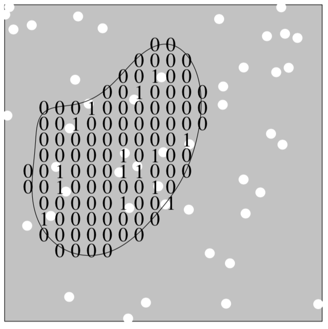:scale 50%
Если реализации отвечают условию независимости и вероятность нахождения более одной точки в бесконечно малом квадрате пренебрежимо мала, то случайную величину \(n(\mathbf{X} \cap B)\) можно рассматривать как количество «успехов» в большом числе независимых испытаний, каждое из которых имеет малую вероятность успеха.
Это означает, что \(n(\mathbf{X} \cap B)\) подчиняется распределению Пуассона, которое характеризует частоту редких событий.
В соответствии с этим законом, вероятность получить \(k\) редких событий равна
\[\mathbb{P}\{N = k\} = e^{-\mu} \frac{\mu^k}{k!}\color{grey}{,~k = 0, 1, 2, ...}\]
Величина \(\mu\) представляет собой математическое ожидание распределения Пуассона.
\[\mathbb{P}\{N = k\} = e^{-\mu} \frac{\mu^k}{k!}\color{grey}{,~k = 0, 1, 2, ...}\]
Величина \(\mu\) представляет собой математическое ожидание распределения Пуассона.
Дисперсия распределения Пуассона равна его математическому ожиданию
Поскольку, как мы показали ранее, ожидаемое количество точек в регионе \(B\) равняется \(\operatorname E[n(\mathbf{X} \cap B)] = \lambda |B|\), можно сделать вывод, что случайная величина \(n(\mathbf{X} \cap B)\) имеет распределение Пуассона с математическим ожиданием:
\[\mu = \lambda |B|\]
Пуассоновский процесс определяется следующими параметрами:
однородность: количество \(n(\mathbf{X} \cap B)\) случайных точек, попадающих в выборочную область \(B\) характеризуется мат. ожиданием \(\mathbb{E}n(\mathbf{X} \cap B) = \lambda |B|\);
независимость: для неперекрывающихся выборочных областей \(B_1, B_2, ..., B_k\), количества \(n(\mathbf{X} \cap B_1), ..., n(\mathbf{X} \cap B_k)\) предствляют собой независимые случайные величины;
распределение Пуассона: число \(n(\mathbf{X} \cap B)\) случайных точек, попадающих в выборочную область \(B\) распределено по закону Пуассона.
Свойства пуассоновского процесса:
условность (conditional): в любой области \(B\) точки процесса независимо и равномерно распределены;
прореживаемость (thinning): при случайном прореживании (отборе точек) пуассоновского точечного паттерна с интенсивностью \(\lambda\) результирующий паттерн будет соответствовать Пуассоновскому процессу с интенсивностью \(p\lambda\), где \(p\) — вероятность сохранения точки (процент отбора);
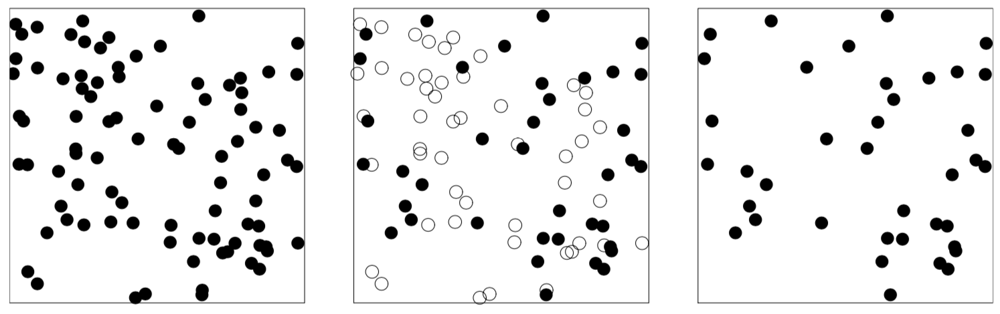
Свойства пуассоновского процесса:
суперпозиция (superposition): сумма двух независимых гомогенных случайных точечных процессов \(Z = X \cup Y\) с интенсивностями \(\lambda_X\) и \(\lambda_Y\) является гомогенным Пуассоновским процессом с интенсивностью \(\lambda_Z = \lambda_X + \lambda_Y\)
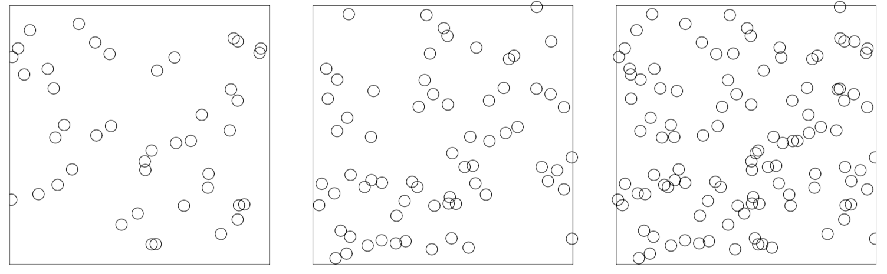
Пусть дана область \(B = [x_{min}, x_{max}] \times [y_{min}, y_{max}]\) и интенсивность точечного процесса \(\lambda\).
Сгенерировать случайное число \(N\), имеющее распределение Пуассона с параметром \(\mu = \lambda |B|\).
Сгенерировать \(N\) координат \(X\), имеющих равномерное распределение на промежутке \([x_{min}, x_{max}]\).
Сгенерировать \(N\) координат \(Y\), имеющих равномерное распределение на промежутке \([y_{min}, y_{max}]\).
Вероятность получить 0 точек также существует и равна \(\mathbb{P}\{N = 0\} = e^{-\mu} \frac{\mu^0}{0!} = e^{-\lambda |B|}\)
Определяется следующими параметрами:
функция интенсивности: количество \(n(\mathbf{X} \cap B)\) случайных точек, попадающих в выборочную область \(B\) характеризуется мат. ожиданием \(\mathbb{E}n(\mathbf{X} \cap B) = \int_B \lambda(u) du = \mu\), где \(\lambda(u)\) есть пространственная функция интенсивности;
независимость: для неперекрывающихся выборочных областей \(B_1, B_2, ..., B_k\), количества \(n(\mathbf{X} \cap B_1), ..., n(\mathbf{X} \cap B_k)\) предствляют собой независимые случайные величины;
распределение Пуассона: число \(n(\mathbf{B} \cap B)\) случайных точек, попадающих в выборочную область \(B\) распределено по закону Пуассона.
Данные параметры отличаются следующими свойствами:
функция плотности \(\lambda(u)\) определяет общее количество точек и их пространственное распределение;
никаких ограничений на функцию \(\lambda(u)\) не накладывается, вследствие этого модель неоднородного Пуассоновского процесса является достаточно общей;
свойства условности, прореживаемости и суперпозиции справедливы также и для неоднородного пуассоновского процесса;
Метод Льюиса-Шедлера (Lewis-Shedler thinning):
Генерируется однородный Пуассоновской процесс с интенсивностью \(M = \max_L\big[\lambda(u)\big]\).
Осуществляется случайное прореживание (исключение) точек с вероятностью сохранения точки \(p(u) = \lambda(u) / M\), пропорциональной функции интенсивности.
Чтобы понять, будет ли точка исключена, генерируется случайное число 0 или 1, имеющее распределение Бернулли с вероятностью положительного исхода \(p = p(u)\). Это можно сделать с помощью функции rbinom(1, 1, p)
\[\lambda(x,y) = x + y^2\]
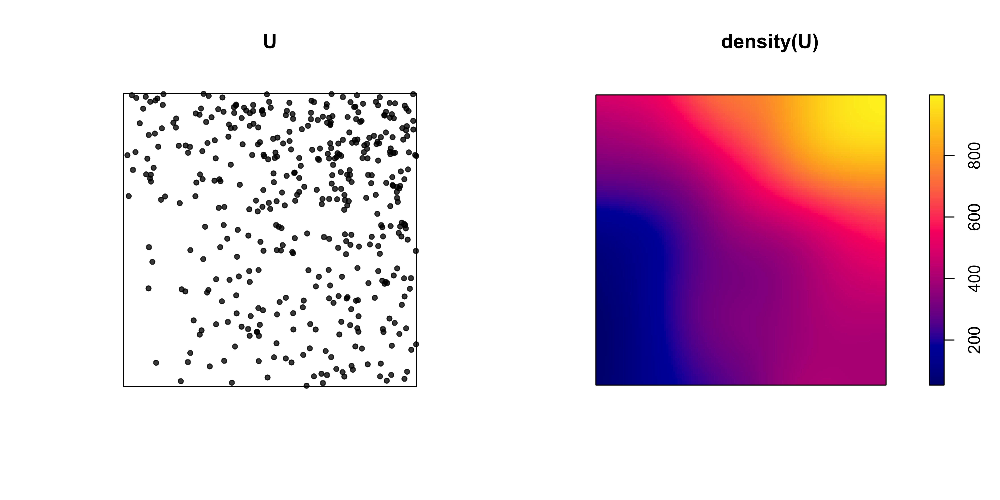Процесс Кокса определяется как Пуассоновский процесс со случайной функцией интенсивности \(\Lambda(u)\), которая называется порождающей интенсивностью
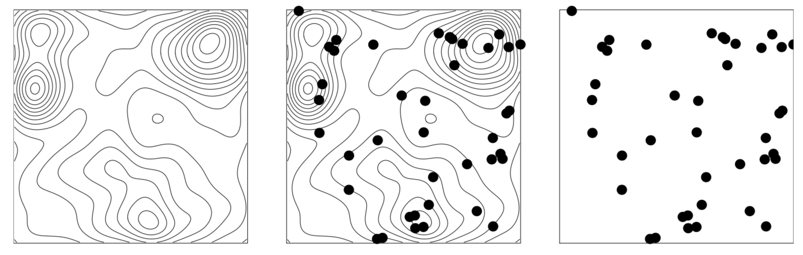Baddeley et. al., 2016
Слева — реализация случайной функции \(\Lambda(u)\). По центру — реализация Пуассоновского точечного процесса с интенсивностью \(\Lambda(u)\).
Cмешанный Пуассоновский процесс: однородный Пуассоновский процесс, порождаемый постоянной случайной величиной \(\Lambda\). Интенсивность процесса равна \(\lambda = \mathbb E\Lambda\).
Логнормальный процесс Кокса: процесс Кокса с порождающей интенсивностью, равной \(\Lambda(u) = \exp\big[G(u)\big]\), где \(G(u)\) — Гауссовское случайное поле.
Для гауссовского случайного поля в каждой точке \(u_i\) случайная величина \(G(u_i)\) имеет нормальное распределение, для пары точек \(u\) и \(v\) пара величин \(\big(G(u), G(v)\big)\) имеет двумерное нормальное распределение. Аналогично и для произвольного числа точек.
Независимые реализации логнормального процесса Кокса:
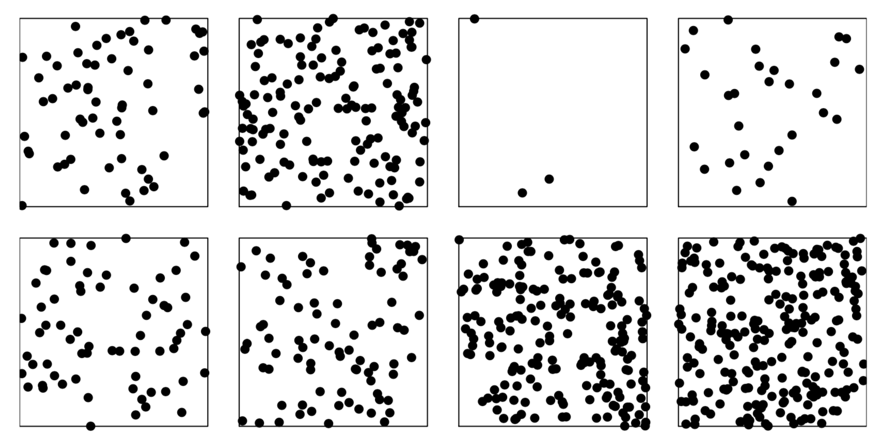Baddeley et. al., 2016
Генерируется «родительский» точечный процесс \(\mathbf{Y}\).
Каждая точка родительского процесса \(y_i\) порождает случайный точечный паттерн «потомков» \(x_{ij}\)
Baddeley et. al., 2016
— Наблюдаются только точки потомков (каждая родительская точка замещается ее потомками).
— Множество точек \(x_{ij}\) формирует реализацию кластерного точечного процесса \(\mathbf{X}\).
Baddeley et. al., 2016
Возможные свойства кластерных процессов:
(CLP1) пуассоновские родители: родительские точки являются реализацией Пуассоновского процесса.
(CLP2) независимые кластеры: кластеры независимы друг от друга.
(CLP3) идентично распределенные кластеры: если совместить разные кластеры, то они будут иметь одно распределение.
(CLP4) независимые потомки: потомки внутри каждого кластера независимы и одинаково распределены.
Процессы, отвечающие требованиям (CLP1)—(CLP4) носят название процессов Неймана-Скотта (Neyman-Scott).
(CLP5) пуассоновское количество потомков: для каждой родительской точки количество потомков есть пуассоновская случайная величина.
(CLP6) изотропные кластеры: плотность распределения потомков зависит только от расстояния до родительской точки.
Процесс Матерна \((\kappa, \mu, r)\): процесс \(Y\) имеет интенсивность \(κ\), каждый родитель имеет \(Π(μ)\) потомков, случайно распределенных в радиусе \(r\)
Процесс Томаса \((\kappa, \mu, \sigma)\): процесс \(Y\) имеет интенсивность κ, каждый родитель имеет \(Π(μ)\) потомков, смещенных на расстояние, подчиняющееся распределению \(N(0,\sigma^2)\)
Реализации процесса Матерна в квадрате \([0, 1] \times [0, 1]\) с интенсивностью родителей \(\kappa = 8\), средним количеством потомков \(\mu = 5\) и радиусом кластера \(R = 0.1\):
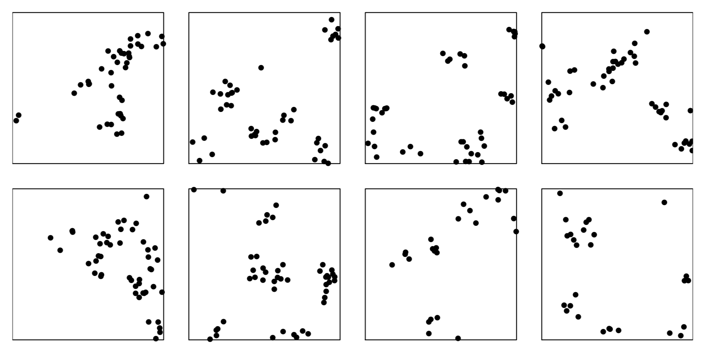Baddeley et. al., 2016
Точки не могут располагаться на расстоянии ближе чем \(r\) — расстояния ингибиции (отталкивания).
Последовательные модели: точки генерируются последовательно согласно Пуассоновскому распредедению (координаты равномерно распределены). Каждая последующая точка сохраняется, только если она находится на расстоянии не ближе, чем \(r\).
Зависимое прореживание: генерируется Пуассоновский процесс. После этого удаляются точки, расположенные на расстоянии меньшем \(r\). Пары близко расположенных точек аннигилируют (процесс Матерна I). Либо точки маркируются случайным «временем прибытия» и удаляется точка, имеющая более позднее время прибытия (процесс Матерна II).
Последовательная модель:
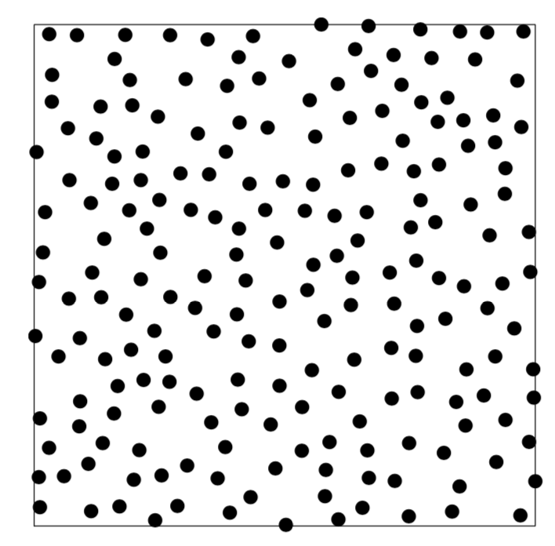:scale 60%
Процесс Матерна I:
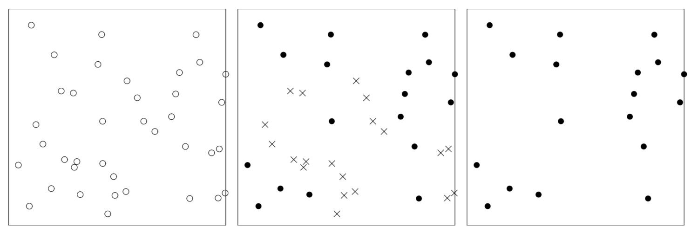Baddeley et. al., 2016
Процесс Матерна II:
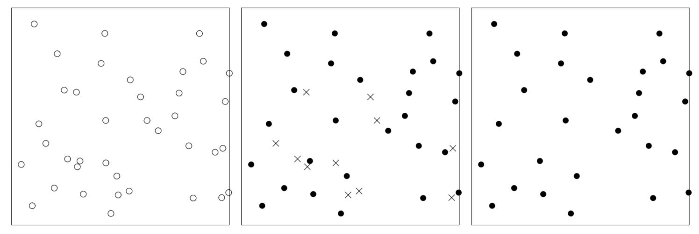Baddeley et. al., 2016
Самсонов Т. Е. Пространственная статистика: курс лекций